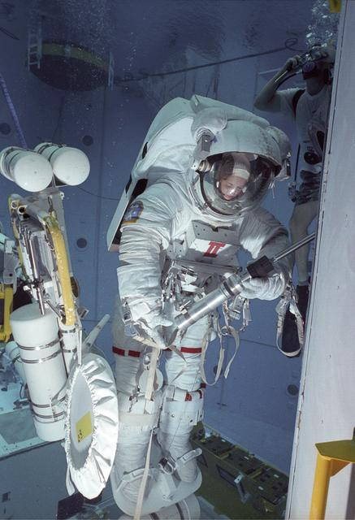

Welcome to Cupola Explorer!
Experience the breathtaking views of Earth from the International Space Station's Cupola.
The cupola is a small module located in the International Space Station(ISS), providing astronauts with an extraordinary view out into space and of Earth through its six-sided window. The cupola has allowed crew-members to witness breathtaking sunrises, sunsets, and the landscape of our planet from orbit. Equipped with shutters, each window is shielded against dangerous collisions from space debris and micrometeoroids.
Attached to the cupola is a robotics arm known as Canadarm2, a complex and versatile robotic arm that plays a large role in the ISS's operations. Canadarm2 is used to capture and dock incoming spacecraft, move supplies and equipment around the station, and assist with spacewalks. The arm is operated by astronauts inside the ISS, who use it to perform a variety of different tasks. The Cupola and the Canadarm2 are extraordinary pieces of equipment that enable astronauts to maintain the station that provides us with such a unique perspective of Earth.
Click the image below to explore the interactive map and see photos taken from the cupola.

Image credit: NASA
OR
Experience the feeling of weightlessness through the Neutral Buyoancy Simulator.
Astronauts train for spacewalks in a large pool called the Neutral Buoyancy Lab (NBL) at NASA's Johnson Space Center in Houston, Texas. The NBL is a massive pool that is 202 feet long, 102 feet wide, and 40 feet deep, and is one of the world's largest indoor pools. it contains full-scale mockups of the International Space Station (ISS) and other spacecraft. The pool is filled with water, and astronauts wear special suits that are weighted to simulate the feeling of weightlessness in space. By adjusting the weights on their suits, astronauts can achieve neutral buoyancy, which allows them to float in the water as if they were in space. The NBL is used to train astronauts for a variety of tasks, including spacewalks, equipment repairs, and scientific experiments. It provides a safe and controlled environment where astronauts can practice their skills and become familiar with the equipment they will be using in space.
Try the Neutral Buoyancy Simulator to understand how astronauts train for spacewalks on Earth!
Image credit: NASA